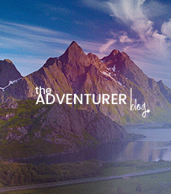
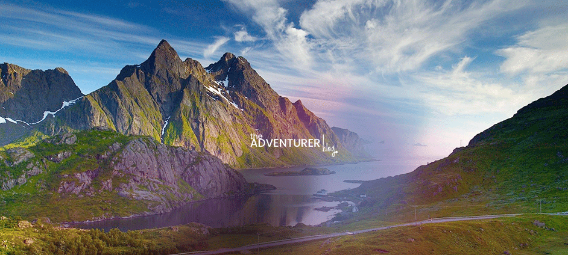

Jestem studentką zainteresowaną projektowaniem interfejsów, programowaniem i odkrywaniem nowych miejsc. Najbardziej cenię podróże, podczas których mogę poznawać lokalną kulturę.
Lubię zarówno aktywne wyjazdy w góry, jak i spokojne zwiedzanie miast. Najważniejsze są dla mnie wspomnienia i nowe doświadczenia. Inspiracji szukam na stronie National Geographic Travel.

Inspiracja do kolejnych podróży.
Kraje, które odwiedziłam
Grecja – Piękne plaże i błękitne morze.
Norwegia – Niesamowite fiordy i krajobrazy.
Francja – Warto zobaczyć wieżę Eiffla w Paryżu.
Włochy – Piękna architektura i pyszne jedzenie.
Rzym
Wenecja
Mediolan
Polska – Warto odwiedzić Kraków i Zakopane.
Artykuły z podróży
W tej sekcji dzielę się wspomnieniami i doświadczeniami z podróży.
Weekend w Rzymie
Autorka: Lena |
Rzym zachwycił mnie zabytkami, wąskimi uliczkami i włoską kuchnią. Największe wrażenie zrobiło na mnie Koloseum oraz spacer po historycznym centrum.
Podczas wyjazdu przekonałam się, że wszystkie drogi prowadzą do Rzymu. Atmosfera miasta sprawiła, że z chęcią wróciłabym tam ponownie.
Podróż to odkrywanie miejsc, do których chce się wracać.
W planowaniu trasy pomogły mi mapy i GPS. Więcej informacji o zabytkach można znaleźć na stronie Turismo Roma.
Co warto zobaczyć?
Koloseum
Fontannę di Trevi
Panteon
Wakacje w Grecji
Autorka: Lena |
Grecja kojarzy mi się ze słońcem, błękitnym morzem i pięknymi plażami. Podczas pobytu najbardziej podobały mi się niewielkie nadmorskie miejscowości.
Chętnie wróciłabym tam, aby zobaczyć kolejne wyspy i spróbować lokalnych potraw.
Podróż do Norwegii
Autorka: Lena |
Norwegia zachwyca majestatycznymi górami, fiordami i spokojem natury. To idealny kierunek dla osób lubiących malownicze widoki.
Najbardziej chciałabym wybrać się na pieszą wycieczkę wśród gór i zobaczyć fiordy z bliska.

Krajobraz inspirujący do podróży do Norwegii.
Galeria
Tutaj znajdziesz zdjęcia z moich podróży i odwiedzonych miejsc.
Plan mojej kolejnej podróży
Chciałabym pojechać do Japonii i zwiedzić Tokio oraz Kioto.
Wybrać termin podróży.
Zarezerwować bilety lotnicze.
Znaleźć i zarezerwować nocleg.
Zaplanować trasę zwiedzania.
Spakować walizkę i przygotować dokumenty.
Warsztaty z Reacta
Data: 14 czerwca 2025
Miejsce: Aula 101
Spotkanie dla osób uczących się frameworków frontendowych.